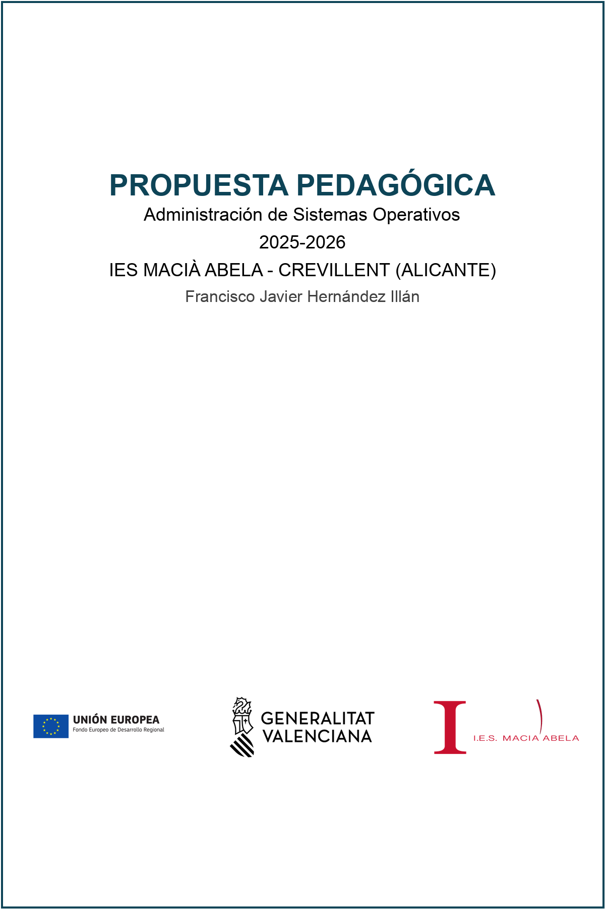

Propuestas Didácticas
ASO 2025-2026

ÍNDICE¶
- 1. INTRODUCCIÓN
- 2. APORTACIONES DEL MÓDULO AL DESARROLLO DE LAS COMPETENCIAS
- 2.1. Relación de las cualificaciones y unidades de competencia del Catálogo Nacional de Cualificaciones Profesionales del Ciclo
- 2.2. Relación con el desarrollo de la competencia general
- 2.3. Relación con las competencias profesionales, personales y sociales
- 3. OBJETIVOS
- 3.1. Contribución del módulo ASO a los objetivos generales
- 3.2. Resultados de Aprendizaje
- 4. CONTENIDOS
- 4.1. Criterios para la secuenciación y definición de las Unidades Didácticas
- 4.2. Definición de las unidades de trabajo
- 4.2.1. UT1: ShellScripting
- 4.2.2. UT2: PowerShell
- 4.2.3. UT3: Servicios de acceso remoto
- 4.2.4. UT4: Servicios de directorio
- 4.2.5. UT5: Integración de Sistemas
- 4.2.6. UT6: Administración de Procesos del Sistema
- 4.2.7. UT7: Automatización y monitorización
- 4.2.8. UT8: Administración de Servidores de Impresión
- 4.3. Temporalización de las unidades didácticas
- 4.4. Distribución temporal
- 5. ACTIVIDADES DE ENSEÑANZA Y APRENDIZAJE
- 6. METODOLOGÍA Y RECURSOS DIDÁCTICOS
- 6.1. Metodología
- 6.2. Recursos Didácticos
- 7. Evaluación
- 7.1. Procedimientos y criterios de evaluación y recuperación
- 8. Inclusión y Diseño Universal para el Aprendizaje (DUA)
- 8.1. Principios DUA aplicados en el módulo
- 8.2. Medidas de atención a la diversidad específicas
- 9. FORMACIÓN DUAL EN LA EMPRESA
- 9.1. Régimen de Formación en Empresa (FE)
- 9.2. Ejemplo de articulación de la dualidad
- 10. Evaluación de la Formación en Empresa
1. INTRODUCCIÓN¶
En el presente documento se presenta la Propuesta Pedagógica del módulo profesional de Administración de Sistemas Operativos (ASO) con código 0374, que se imparte en segundo curso del Ciclo Formativo de Grado Superior (CFGS) denominado Administración de Sistemas Informáticos en Red (ASIR) cuyo código es CINE-5b, conforme al Real Decreto 1629/2009, de 30 de octubre boe.es, por el que se establece el título y se fijan sus enseñanzas mínimas. Dicho módulo se imparte en el IES Macià Abela de Crevillente.
El módulo profesional de ASO está directamente relacionado con las siguientes unidades de competencia del Catálogo Nacional de Cualificaciones Profesionales: UC0490_3: Gestionar servicios en el sistema informático y UC0485_3: Instalar, configurar y administrar el software de base y de aplicación del sistema. Por tanto, la superación de dicho módulo conllevará la acreditación de estas unidades de competencia según lo establecido en el Real Decreto 1629/2009.
2. APORTACIONES DEL MÓDULO AL DESARROLLO DE LAS COMPETENCIAS¶
2.1. Relación de las cualificaciones y unidades de competencia del Catálogo Nacional de Cualificaciones Profesionales del Ciclo¶
Correspondencia del módulo 0374: Administración de sistemas operativos¶
Según el Anexo V B del Real Decreto 1629/2009, de 30 de octubre, por el que se establece el título de Técnico Superior en Administración de Sistemas Informáticos en Red y se fijan sus enseñanzas mínimas, el módulo profesional 0374: Administración de sistemas operativos tiene la siguiente correspondencia con las unidades de competencia:
| Módulo profesional superado | Unidades de competencia acreditables |
|---|---|
| 0374. Administración de sistemas operativos | UC0490_3: Gestionar servicios en el sistema informático. UC0485_3: Instalar, configurar y administrar el software de base y de aplicación del sistema. |
El módulo contribuye directamente a las competencias profesionales de administración de sistemas operativos de servidor y gestión de recursos del sistema. La superación del módulo profesional 0374 permite la acreditación de las unidades de competencia UC0490_3 y UC0485_3 según establece el Real Decreto 1629/2009.
2.2. Relación con el desarrollo de la competencia general¶
La competencia general de este título consiste en configurar, administrar y mantener sistemas informáticos, garantizando la funcionalidad, la integridad de los recursos y servicios del sistema, con la calidad exigida y cumpliendo la reglamentación vigente.
El módulo de Administración de Sistemas Operativos contribuye a dicha competencia general de manera directa, ya que los alumnos y alumnas deberán administrar y mantener sistemas operativos de servidor, gestionar servicios de directorio, procesos del sistema y automatizar tareas del sistema.
2.3. Relación con las competencias profesionales, personales y sociales¶
Según el Artículo 5 del Real Decreto 1629/2009 boe.es, las competencias profesionales, personales y sociales a las que contribuye el módulo de ASO son las siguientes:
| Código | Competencia | Por qué contribuye ASO |
|---|---|---|
| a) | Administrar sistemas operativos de servidor, instalando y configurando el software, en condiciones de calidad para asegurar el funcionamiento del sistema. | Porque ASO se centra en la administración de sistemas operativos de servidor, incluyendo servicios de directorio, gestión de procesos y administración remota del sistema. |
| c) | Administrar aplicaciones instalando y configurando el software, en condiciones de calidad para responder a las necesidades de la organización. | Porque el módulo incluye la gestión y configuración de software de aplicación del sistema, servicios de directorio y automatización de tareas mediante lenguajes de guiones. |
| l) | Administrar usuarios de acuerdo a las especificaciones de explotación para garantizar los accesos y la disponibilidad de los recursos del sistema. | Porque ASO contempla la administración de servicios de directorio (Active Directory/LDAP), gestión de usuarios, permisos y acceso a recursos del sistema. |
| n) | Gestionar y/o realizar el mantenimiento de los recursos de su área (programando y verificando su cumplimiento), en función de las cargas de trabajo y el plan de mantenimiento. | Porque el módulo trabaja la automatización de tareas del sistema mediante lenguajes de guiones, programación de tareas y gestión de recursos del sistema operativo. |
| p) | Mantener el espíritu de innovación y actualización en el ámbito de su trabajo para adaptarse a los cambios tecnológicos y organizativos de su entorno profesional. | Porque ASO implica trabajar con diferentes tecnologías (sistemas libres y propietarios), estar actualizado con las novedades del sector y adaptarse a las nuevas tendencias en administración de sistemas. |
3. OBJETIVOS¶
3.1. Contribución del módulo ASO a los objetivos generales¶
Según el Artículo 9 del Real Decreto 1629/2009 boe.es, los objetivos generales a los que contribuye el módulo de ASO son los siguientes:
| Código | Objetivo | Por qué contribuye ASO |
|---|---|---|
| a) | Analizar la estructura del software de base, comparando las características y prestaciones de sistemas libres y propietarios, para administrar sistemas operativos de servidor. | Administración de sistemas libres (Linux) y propietarios (Windows Server), comparando características y prestaciones |
| o) | Aplicar técnicas de monitorización interpretando los resultados y relacionándolos con las medidas correctoras para diagnosticar y corregir las disfunciones. | Monitorización, gestión de procesos, análisis de rendimiento y diagnóstico mediante herramientas de monitorización |
| p) | Establecer la planificación de tareas, analizando actividades y cargas de trabajo del sistema para gestionar el mantenimiento. | Automatización de tareas mediante lenguajes de guiones (bash, PowerShell), programación de tareas y gestión de mantenimiento |
| r) | Identificar formas de intervención en situaciones colectivas, analizando el proceso de toma de decisiones y efectuando consultas para liderar las mismas. | Trabajo en equipo, toma de decisiones técnicas y colaboración para resolver problemas del sistema |
| s) | Identificar y valorar las oportunidades de aprendizaje y su relación con el mundo laboral, analizando las ofertas y demandas del mercado para gestionar su carrera profesional. | Búsqueda de información sobre nuevas tecnologías, actualizaciones del sector y preparación para el entorno laboral |
3.2. Resultados de Aprendizaje¶
| Código | Descripción | Peso (%) |
|---|---|---|
| RA1 | Administra el servicio de directorio interpretando especificaciones e integrándolo en una red. | 20 |
| RA2 | Administra procesos del sistema describiéndolos y aplicando criterios de seguridad y eficiencia. | 10 |
| RA3 | Gestiona la automatización de tareas del sistema, aplicando criterios de eficiencia y utilizando comandos y herramientas gráficas. | 10 |
| RA4 | Administra de forma remota el sistema operativo en red valorando su importancia y aplicando criterios de seguridad. | 10 |
| RA5 | Administra servidores de impresión describiendo sus funciones e integrándolos en una red. | 10 |
| RA6 | Integra sistemas operativos libres y propietarios, justificando y garantizando su interoperabilidad. | 20 |
| RA7 | Utiliza lenguajes de guiones en sistemas operativos, describiendo su aplicación y administrando servicios del sistema operativo. | 20 |
Total: 100%
4. CONTENIDOS¶
4.1. Criterios para la secuenciación y definición de las Unidades Didácticas¶
Para la definición de las unidades de trabajo de este módulo, se ha realizado un análisis basado en el Ciclo CORC (Competencias - Objetivos - Resultados de Aprendizaje - Criterios de Evaluación) desarrollado por Raül Solbes. Este enfoque metodológico permite establecer una secuencia coherente de los contenidos partiendo de los Resultados de Aprendizaje y garantizando la adquisición de las competencias profesionales.
El Ciclo CORC establece la siguiente relación entre los elementos curriculares:
- Los Criterios de Evaluación (CCEE) permiten valorar si los Resultados de Aprendizaje (RA) se han conseguido.
- Los Resultados de Aprendizaje (RA) concretan los objetivos generales del ciclo.
- Los Objetivos desarrollan las competencias profesionales.
- La superación de todos los RA de los módulos asegura la adquisición de los objetivos y permite desarrollar las competencias del título.
Por tanto, para definir las unidades de trabajo se ha partido del análisis de los Resultados de Aprendizaje (RA), agrupándolos de forma coherente según su relación funcional y secuenciándolos teniendo en cuenta los siguientes criterios:
- Los conocimientos previos de los alumnos.
- La relación entre los contenidos y el resto de módulos del ciclo formativo.
- Una progresión lógica de complejidad.
- Un tratamiento cíclico de los contenidos.
Unidades de Trabajo del módulo ASO
A partir del análisis realizado en el ciclo de corc, hemos definido 8 unidades de trabajo (UT). A continuación, en la siguiente tabla y a modo de mapa general, se muestran las diferentes UT y los RA que cubren, indicando la carga horaria empleada durante el presente curso en cada una de ellas:
| Unidades de Trabajo | RA1 | RA2 | RA3 | RA4 | RA5 | RA6 | RA7 |
|---|---|---|---|---|---|---|---|
| 1. ShellScripting | X | ||||||
| 2. PowerShell | X | ||||||
| 3. Servicios de acceso remoto | X | ||||||
| 4. Servicios de directorio | X | ||||||
| 5. Integración de Sistemas | X | ||||||
| 6. Administración de Procesos del Sistema | X | ||||||
| 7. Automatización y monitorización | X | ||||||
| 8. Administración de Servidores de Impresión | X | ||||||
| Total - 133 h Porcentaje |
X 20% |
X 10% |
X 10% |
X 10% |
X 10% |
X 20% |
X 20% |
4.2. Definición de las unidades de trabajo¶
Las siguientes unidades de trabajo se han organizado para seguir el orden lógico y progresivo marcado en el apartado anterior, asegurando coherencia y conexión entre contenidos y competencias.
4.2.1. UT1: ShellScripting¶
| Elemento de programación | Descripción |
|---|---|
| Duración | 12 horas (6 sesiones de 2 horas) |
| Resultado de Aprendizaje | RA7 - Utiliza lenguajes de guiones en sistemas operativos |
| Objetivos de la UT | - Crear y ejecutar guiones en el terminal de bash de Linux/GNU - Conocer y utilizar variables, parámetros y operadores - Optimizar el código mediante tuberías y redirecciones - Dominar el control de flujo (condicionales e iterativas) - Aplicar guiones para la administración de servicios del sistema |
| Competencias profesionales (RD 1629/2009) | La UT contribuye a las siguientes competencias profesionales: a), c), n) y personales: p) del título. |
| Contenidos | Creación de scripts en Shell: - Variables, parámetros y operadores en Shell - Redirecciones y tuberías - Control de flujo (condicionales e iterativas) - Vectores y funciones en Shell - Integración con servicios del sistema |
| Orientaciones metodológicas | Se trabajará mediante la realización práctica de scripts, progresando desde ejercicios sencillos hasta scripts complejos de administración. Se fomentará el trabajo colaborativo en la depuración de errores y se relacionará con situaciones reales de administración de sistemas Linux. |
| Criterios de evaluación (RA7) | - 7a) Se han utilizado y combinado las estructuras del lenguaje para crear guiones - 7b) Se han utilizado herramientas para depurar errores sintácticos y de ejecución - 7c) Se han interpretado guiones de configuración del sistema operativo - 7d) Se han realizado cambios y adaptaciones de guiones del sistema - 7e) Se han creado y probado guiones de administración de servicios - 7f) Se han creado y probado guiones de automatización de tareas - 7g) Se han implantado guiones en sistemas libres - 7h) Se han consultado y utilizado librerías de funciones - 7i) Se han documentado los guiones creados |
4.2.2. UT2: PowerShell¶
| Elemento de programación | Descripción |
|---|---|
| Duración | 12 horas (6 sesiones de 2 horas) |
| Resultado de Aprendizaje | RA7 - Utiliza lenguajes de guiones en sistemas operativos |
| Objetivos de la UT | - Crear y ejecutar scripts en PowerShell de Windows - Conocer y utilizar variables, parámetros y operadores en PowerShell - Dominar el control de flujo en PowerShell - Automatizar tareas de administración en sistemas Windows - Integrar PowerShell con servicios de directorio y gestión de servidores |
| Competencias profesionales (RD 1629/2009) | La UT contribuye a las siguientes competencias profesionales: a), c), n) y personales: p) del título. |
| Contenidos | Creación de scripts en PowerShell: - Variables, parámetros y operadores en PowerShell - Control de flujo en PowerShell (condicionales e iterativas) - Vectores y funciones en PowerShell - Administración de servicios con PowerShell - Integración con Active Directory mediante PowerShell |
| Orientaciones metodológicas | Se trabajará con PowerShell ISE y VS Code, desarrollando scripts prácticos para la administración de Windows Server. Se establecerán conexiones con situaciones reales de administración de entornos empresariales propietarios. |
| Criterios de evaluación (RA7) | - 7a) Se han utilizado y combinado las estructuras del lenguaje para crear guiones - 7b) Se han utilizado herramientas para depurar errores sintácticos y de ejecución - 7c) Se han interpretado guiones de configuración del sistema operativo - 7d) Se han realizado cambios y adaptaciones de guiones del sistema - 7e) Se han creado y probado guiones de administración de servicios - 7f) Se han creado y probado guiones de automatización de tareas - 7g) Se han implantado guiones en sistemas propietarios - 7h) Se han consultado y utilizado librerías de funciones - 7i) Se han documentado los guiones creados |
4.2.3. UT3: Servicios de acceso remoto¶
| Elemento de programación | Descripción |
|---|---|
| Duración | 12 horas (6 sesiones de 2 horas) |
| Resultado de Aprendizaje | RA4 - Administra de forma remota el sistema operativo en red |
| Objetivos de la UT | - Configurar servicios de acceso remoto en modo texto (SSH) - Configurar servicios de escritorio remoto (RDP y xRDP) - Utilizar herramientas gráficas de administración remota - Aplicar criterios de seguridad en el acceso remoto |
| Competencias profesionales (RD 1629/2009) | La UT contribuye a las siguientes competencias profesionales: a), l) del título. |
| Contenidos | - Acceso remoto en modo texto con SSH - Tunelización SSH - Escritorio remoto: RDP y xRDP - Herramientas gráficas: TeamViewer, AnyDesk, Apache Guacamole - Seguridad y encriptación en acceso remoto - Configuración de usuarios para acceso remoto |
| Orientaciones metodológicas | Se configurarán entornos reales de acceso remoto, probando la conectividad entre sistemas heterogéneos. Se prestará especial atención a los aspectos de seguridad y se realizarán pruebas prácticas de acceso desde diferentes ubicaciones. |
| Criterios de evaluación (RA4) | - 4a) Se han descrito métodos de acceso y administración remota de sistemas - 4b) Se ha diferenciado entre los servicios orientados a sesión y los no orientados a sesión - 4c) Se han utilizado herramientas de administración remota suministradas por el propio sistema operativo - 4d) Se han instalado servicios de acceso y administración remota - 4e) Se han utilizado comandos y herramientas gráficas para gestionar los servicios - 4f) Se han creado cuentas de usuario para el acceso remoto - 4g) Se han realizado pruebas de acceso remota entre sistemas heterogéneos - 4h) Se han utilizado mecanismos de encriptación de la información transferida - 4i) Se han documentado los procesos y servicios del sistema administrados de forma remota |
4.2.4. UT4: Servicios de directorio¶
| Elemento de programación | Descripción |
|---|---|
| Duración | 24 horas (12 sesiones de 2 horas) |
| Resultado de Aprendizaje | RA1 - Administra el servicio de directorio |
| Objetivos de la UT | - Instalar y configurar servicios de directorio libres (LDAP) - Instalar y configurar servicios de directorio propietarios (Active Directory) - Administrar usuarios y grupos mediante servicios de directorio - Integrar servicios de directorio en entornos de red |
| Competencias profesionales (RD 1629/2009) | La UT contribuye a las siguientes competencias profesionales: a), c), l) del título. |
| Contenidos | Servicios de directorio libres: LDAP - Instalación y configuración de LDAP - Modelo de información y esquema LDAP - Herramientas de gestión LDAP - Integración con PAM y NSS Servicios de directorio propietarios: Active Directory - Instalación de Active Directory en Windows Server - Creación de estructura organizacional - Permisos y directivas de grupo - Relaciones de confianza y perfiles de usuario |
| Orientaciones metodológicas | Se trabajará con ambas soluciones de directorio, comparando sus características y aplicaciones. Se configurarán escenarios reales de integración con clientes en red y se pondrá especial énfasis en la gestión de usuarios y políticas de grupo. |
| Criterios de evaluación (RA1) | - 1a) Se han identificado la función, los elementos y las estructuras lógicas del servicio de directorio - 1b) Se ha determinado y creado el esquema del servicio de directorio - 1c) Se ha realizado la instalación del servicio de directorio en el servidor - 1d) Se ha realizado la configuración y personalización del servicio de directorio - 1e) Se ha integrado el servicio de directorio con otros servicios - 1f) Se han aplicado filtros de búsqueda en el servicio de directorio - 1g) Se ha utilizado el servicio de directorio como mecanismo de acreditación centralizada de los usuarios en una red - 1h) Se ha realizado la configuración del cliente para su integración en el servicio de directorio - 1i) Se han utilizado herramientas gráficas y comandos para la administración del servicio de directorio - 1j) Se ha documentado la estructura e implantación del servicio de directorio |
4.2.5. UT5: Integración de Sistemas¶
| Elemento de programación | Descripción |
|---|---|
| Duración | 24 horas (12 sesiones de 2 horas) |
| Resultado de Aprendizaje | RA6 - Integra sistemas operativos libres y propietarios |
| Objetivos de la UT | - Compartir recursos en red entre sistemas operativos diferentes - Configurar servicios de compartición (NFS, Samba) - Gestionar permisos de acceso en escenarios heterogéneos - Integrar sistemas libres y propietarios |
| Competencias profesionales (RD 1629/2009) | La UT contribuye a las siguientes competencias profesionales: a), l) del título. |
| Contenidos | - Escenarios heterogéneos y protocolos para redes heterogéneas - Servicio NFS (instalación, configuración, montaje automático) - Servicio Samba (instalación, configuración, integración con AD) - NextCloud para compartición de archivos - Gestión de permisos en sistemas mixtos |
| Orientaciones metodológicas | Se trabajará en entornos reales de integración, configurando compartición de recursos entre Linux y Windows. Se pondrá especial énfasis en la gestión de permisos y la seguridad en la compartición de recursos. Se utilizará Docker para facilitar el despliegue de servicios. |
| Criterios de evaluación (RA6) | - 6a) Se ha identificado la necesidad de compartir recursos en red - 6b) Se han establecido niveles de seguridad para controlar el acceso - 6c) Se ha comprobado la conectividad de la red en un escenario heterogéneo - 6d) Se ha descrito la funcionalidad de los servicios que permiten compartir recursos - 6e) Se han instalado y configurado servicios para compartir recursos en red - 6f) Se ha comprobado el funcionamiento de los servicios instalados - 6g) Se ha trabajado en grupo para acceder desde equipos con diferentes SO - 6h) Se ha documentado la configuración de los servicios instalados |
4.2.6. UT6: Administración de Procesos del Sistema¶
| Elemento de programación | Descripción |
|---|---|
| Duración | 12 horas (6 sesiones de 2 horas) |
| Resultado de Aprendizaje | RA2 - Administra procesos del sistema |
| Objetivos de la UT | - Comprender el concepto de proceso, tipos, estados y ciclo de vida - Utilizar herramientas para gestión y control de procesos - Gestionar demonios/servicios en sistemas libres y propietarios - Aplicar criterios de seguridad en la gestión de procesos |
| Competencias profesionales (RD 1629/2009) | La UT contribuye a las siguientes competencias profesionales: a), m) del título. |
| Contenidos | - Concepto de proceso: tipos, estados, ciclo de vida - Hilos de ejecución - Planificación de procesos - Gestión de procesos con Shell y PowerShell - Demonios y servicios (systemd) - Secuencia de arranque del sistema - Control y seguimiento de procesos |
| Orientaciones metodológicas | Se trabajará tanto en sistemas Linux como Windows, identificando procesos del sistema y aplicando criterios de seguridad. Se analizarán situaciones reales de gestión de procesos en servidores de producción. |
| Criterios de evaluación (RA2) | - 2a) Se han descrito el concepto de proceso del sistema, tipos, estados y ciclo de vida - 2b) Se han utilizado interrupciones y excepciones para describir los eventos internos - 2c) Se ha diferenciado entre proceso, hilo y trabajo - 2d) Se han realizado tareas de creación, manipulación y terminación de procesos - 2e) Se ha utilizado el sistema de archivos como medio lógico - 2f) Se han utilizado herramientas gráficas y comandos para el control - 2g) Se ha comprobado la secuencia de arranque del sistema - 2h) Se han tomado medidas de seguridad ante procesos no identificados - 2i) Se han documentado los procesos habituales del sistema |
4.2.7. UT7: Automatización y monitorización¶
| Elemento de programación | Descripción |
|---|---|
| Duración | 12 horas (6 sesiones de 2 horas) |
| Resultado de Aprendizaje | RA3 - Gestiona la automatización de tareas del sistema |
| Objetivos de la UT | - Automatizar tareas repetitivas del sistema - Configurar planificación de tareas (cron, Programador de tareas) - Monitorizar el sistema y obtener información sobre su rendimiento - Documentar procesos automatizados |
| Competencias profesionales (RD 1629/2009) | La UT contribuye a las siguientes competencias profesionales: n) del título. |
| Contenidos | - Ventajas de la automatización - Planificación de tareas con crontab (Linux) - Programador de tareas de Windows - Estructura de directorios del sistema - Búsqueda de información del sistema - Herramientas de monitorización (Nagios, PRTG, OpenNMS) - Documentación de procesos automatizados |
| Orientaciones metodológicas | Se configurarán tareas automatizadas reales de administración del sistema. Se utilizarán herramientas de monitorización para observar el rendimiento del sistema y se documentará cada automatización implementada. |
| Criterios de evaluación (RA3) | - 3a) Se han descrito las ventajas de la automatización - 3b) Se han utilizado los comandos del sistema para la planificación - 3c) Se han establecido restricciones de seguridad - 3d) Se han realizado planificaciones de tareas repetitivas - 3e) Se ha automatizado la administración de cuentas - 3f) Se han instalado y configurado herramientas gráficas - 3g) Se han utilizado herramientas gráficas para la planificación - 3h) Se han documentado los procesos programados |
4.2.8. UT8: Administración de Servidores de Impresión¶
| Elemento de programación | Descripción |
|---|---|
| Duración | 12 horas (6 sesiones de 2 horas) |
| Resultado de Aprendizaje | RA5 - Administra servidores de impresión |
| Objetivos de la UT | - Instalar y configurar servidores de impresión - Gestionar impresoras y colas de impresión - Configurar impresoras compartidas en red - Documentar la configuración de servidores de impresión |
| Competencias profesionales (RD 1629/2009) | La UT contribuye a las siguientes competencias profesionales: a) del título. |
| Contenidos | - Sistemas de impresión, puertos y protocolos de impresión - Servidor CUPS en GNU/Linux - Servicios de impresión en Windows Server - Gestión de impresoras y colas de trabajos - Compartición de impresoras en red - Administración mediante herramientas gráficas y comandos |
| Orientaciones metodológicas | Se configurarán servidores de impresión reales en ambos sistemas operativos. Se comprobará la compartición entre sistemas heterogéneos y se documentará toda la configuración realizada. |
| Criterios de evaluación (RA5) | - 5a) Se ha descrito la funcionalidad de los sistemas y servidores de impresión - 5b) Se han identificado los puertos y los protocolos utilizados - 5c) Se han utilizado las herramientas para la gestión de impresoras - 5d) Se ha instalado y configurado un servidor de impresión en entorno Web - 5e) Se han creado y clasificado impresoras lógicas - 5f) Se han creado grupos de impresión - 5g) Se han gestionado impresoras y colas mediante comandos y herramientas - 5h) Se han compartido impresoras en red entre sistemas diferentes - 5i) Se ha documentado la configuración del servidor y de las impresoras |
4.3. Temporalización de las unidades didácticas¶
En el Anexo II de la ORDEN 36/2012, de 22 de junio, se puede observar la secuenciación y distribución horaria semanal del módulo. De esta información, se puede extraer que el módulo de Administración de Sistemas Operativos dispone de una carga lectiva completa de 133 horas a razón de 4 horas semanales impartidas durante el curso, salvo las últimas 10 semanas que corresponden a la formación en centros de trabajo (FCT).
De las 133 horas totales, 108 horas se destinan a las unidades de trabajo y las 25 horas restantes se dedican a evaluación, actividades complementarias, presentación del módulo y otras actividades didácticas.
A continuación, se muestra la distribución de las unidades de trabajo a lo largo de las dos evaluaciones del curso:
4.4. Distribución temporal¶
| Evaluación | Unidades de Trabajo | Horas |
|---|---|---|
| 1ª Evaluación | UT1: ShellScripting UT2: PowerShell UT3: Servicios de acceso remoto UT4: Servicios de directorio |
12 12 12 24 |
| 2ª Evaluación | UT5: Integración de Sistemas UT6: Administración de Procesos del Sistema UT7: Automatización y monitorización UT8: Administración de Servidores de Impresión |
24 12 12 12 |
5. ACTIVIDADES DE ENSEÑANZA Y APRENDIZAJE¶
Las actividades de enseñanza-aprendizaje son fundamentales para el desarrollo de las competencias profesionales del alumnado en el módulo de Administración de Sistemas Operativos. Para ello, se diseñarán actividades que permitan aplicar los conocimientos teóricos en contextos prácticos reales, fomentando el aprendizaje significativo y la resolución de problemas del mundo laboral.
Se plantearán actividades variadas que faciliten diferentes tipos de aprendizaje, adaptándose a los diversos ritmos y estilos de aprendizaje del alumnado. Todas las actividades estarán orientadas al logro de los resultados de aprendizaje definidos y contribuirán al desarrollo de las competencias profesionales y personales establecidas en el currículo.
| Tipo de actividad | Código | Objetivo | Características |
|---|---|---|---|
| Actividades de Enseñanza-Aprendizaje | AE-A | Desarrollar los conocimientos y procedimientos propios de cada unidad de trabajo mediante prácticas guiadas y progresivas. | Configuración de servicios (SSH, LDAP, AD, NFS, Samba), desarrollo de scripts (bash, PowerShell), administración y monitorización de sistemas |
| Actividades de Refuerzo | AE-R | Consolidar los contenidos mínimos y superar dificultades de aprendizaje. | Ejercicios adicionales con mayor apoyo y tutorización personalizada |
| Actividades de Profundización | AE-P | Ampliar conocimientos más allá de los contenidos mínimos exigibles. | Configuraciones avanzadas, scripts complejos, optimización y hardening de sistemas |
| Actividades del Proyecto | AE-PR | Integrar conocimientos de múltiples unidades mediante proyectos reales. | Proyectos de integración, automatización, monitorización y documentación técnica |
| Actividades del Reto | AE-RT | Desarrollar competencias mediante resolución de problemas complejos y abiertos. | Resolución de incidencias, integración de sistemas, optimización y gestión de entornos heterogéneos |
6. METODOLOGÍA Y RECURSOS DIDÁCTICOS¶
6.1. Metodología¶
La metodología para el módulo de Administración de Sistemas Operativos se fundamenta en un enfoque práctico, basado en proyectos y retos reales de administración de sistemas. Se empleará una metodología activa y participativa que priorice el "saber hacer" mediante la realización de actividades prácticas en entornos simulados y reales.
6.1.1. Principios metodológicos fundamentales¶
| Principio | Descripción |
|---|---|
| Aprendizaje basado en la práctica | El alumnado trabajará directamente con sistemas operativos reales (Linux y Windows Server), configurando servicios, desarrollando scripts y gestionando procesos. Todas las unidades de trabajo incluyen prácticas de laboratorio. |
| Metodología de retos | Se plantearán retos reales de administración de sistemas, como el "Reto ShellScript" para gestionar servidores o la integración de sistemas heterogéneos. Estos retos promueven el pensamiento crítico y la resolución de problemas. |
| Trabajo colaborativo y modular | Se fomentará el trabajo en grupo para proyectos de integración y automatización. El desarrollo de scripts modular (separar funcionalidades en archivos independientes) promueve la colaboración y el mantenimiento del código. |
| Aprendizaje progresivo | Desde configuraciones básicas hasta scripts complejos de administración. Se comenzará con comandos simples y se avanzará hacia automatizaciones completas de infraestructura. |
| Integración entre módulos | Se relacionará con otros módulos del ciclo: integración con bases de datos (SGBD), servicios web (IAW), redes (SOR), y seguridad (SEG). |
| Documentación técnica | Se exigirá documentación técnica de todas las configuraciones y scripts realizados, desarrollando competencias de comunicación técnica escrita. |
| Utilización de documentación oficial | Consulta e interpretación de documentación técnica de fabricantes (Red Hat, Microsoft, man pages) y especificaciones de estándares (RFC, LDAP, etc.). |
| Simulación de entornos empresariales | Creación de entornos que simulen infraestructuras reales con servidores simulados, integración de sistemas heterogéneos y gestión centralizada con servicios de directorio. |
6.1.2. Metodología específica por unidad de trabajo¶
| UT | Unidad de Trabajo | Metodología |
|---|---|---|
| UT1-UT2 | Scripting | Aprendizaje práctico mediante desarrollo de scripts desde ejercicios básicos hasta proyectos de automatización completos. Se utilizarán técnicas como here documents, arrays y ejecución en segundo plano. |
| UT3 | Servicios de acceso remoto | Configuración real de servicios SSH, RDP y herramientas gráficas, probando conectividad entre sistemas heterogéneos. |
| UT4 | Servicios de directorio | Implementación de LDAP y Active Directory con integración de clientes en red y gestión de usuarios y políticas. |
| UT5 | Integración de Sistemas | Proyecto de integración real entre Linux y Windows mediante NFS, Samba y NextCloud. |
| UT6 | Administración de Procesos | Análisis práctico de procesos del sistema y gestión de servicios en tiempo real. |
| UT7 | Automatización y monitorización | Desarrollo de scripts de automatización con cron y Programador de tareas, integración con herramientas de monitorización. |
| UT8 | Servidores de Impresión | Configuración práctica de servidores de impresión CUPS y servicios de Windows. |
6.2. Recursos Didácticos¶
Los recursos para el módulo de Administración de Sistemas Operativos se dividen en tres tipos:
6.2.1. 1. Materiales relacionados con los contenidos conceptuales¶
Apuntes y actividades elaborados con Material for MkDocs y subidos a GitHub en repositorio público, accesible en la web del módulo.
Enlace a los apuntes de ASO: Apuntes ASO - Javier Hernández
| Tipo de material | Descripción | Enlace |
|---|---|---|
| Apuntes completos del módulo | Documentación completa de las unidades de trabajo con guías prácticas, ejemplos y ejercicios | Apuntes ASO - Javier Hernández |
| Guías de configuración | Guías prácticas paso a paso para configuración de servicios (SSH, LDAP, AD, etc.) | Incluido en los apuntes |
| Ejemplos de scripts | Repositorios con ejemplos de scripts de administración en bash y PowerShell | Incluido en los apuntes |
| Mapas conceptuales | Mapas de tecnologías y relaciones entre servicios | Incluido en los apuntes |
| Repositorios de código | Enlaces a repositorios GitHub con código de ejemplo y proyectos | Enlaces en cada UT |
| Acceso | Repositorio público del módulo en GitHub y plataforma educativa del centro | GitHub Pages |
6.2.2. 2. Materiales relacionados con los contenidos procedimentales¶
Manuales y documentación de las herramientas propias de Sistemas Operativos.
| Categoría | Material |
|---|---|
| Documentación oficial de Linux | man pages, info pages, documentación de Red Hat, Ubuntu |
| Documentación oficial de Windows Server | Microsoft Learn, TechNet, Windows Server documentation |
| Guías de configuración de servicios | LDAP (OpenLDAP, 389 Directory Server), Active Directory, SSH, RDP |
| Documentación de scripting | Guía de bash scripting, PowerShell documentation |
| Estándares y RFCs | Protocolos SSH, LDAP, RDP, NFS, SMB |
| Herramientas de monitorización | Documentación de Nagios, PRTG, OpenNMS |
Todos los enlaces a manuales oficiales y material extra están disponibles en la web del curso.
6.2.3. 3. Materiales relacionados con los productos y software¶
Software diverso y adecuado para alcanzar los resultados de aprendizaje, relacionados con productos del entorno empresarial.
| Categoría | Software |
|---|---|
| Virtualización | VirtualBox, Docker, Vagrant |
| Sistemas operativos | Ubuntu Server, CentOS/Rocky Linux, Windows Server |
| Servicios de directorio | OpenLDAP, 389 Directory Server, Active Directory |
| Herramientas de scripting | Bash, PowerShell, Python |
| Gestión de procesos | systemd, Service Manager |
| Monitorización | Nagios, PRTG, OpenNMS |
| Servicios de red | OpenSSH, xRDP, CUPS |
| Integración | Samba, NFS, NextCloud |
| Gestión de contenedores | Docker, Podman |
Nota: Los recursos software ya están instalados en los equipos del centro y se basan en software libre, facilitando que el alumnado pueda utilizarlos en sus equipos personales. El uso de software libre permite la extensión del aprendizaje más allá del horario lectivo y la reproducción de los ejercicios y prácticas en sus propios ordenadores.
6.2.4. Equipamiento del aula¶
| Equipamiento | Descripción |
|---|---|
| Ordenadores del aula | Equipos con VirtualBox, Docker y herramientas de administración instaladas |
| Servidores virtuales | Infraestructura virtualizada para prácticas de configuración |
| Equipo audiovisual | Proyector y pantalla para presentaciones |
| Conexión a Internet | Acceso para descarga de documentación y actualizaciones |
| Acceso remoto | Posibilidad de practicar conexiones SSH y RDP entre equipos del aula |
7. Evaluación¶
La evaluación en el módulo de Administración de Sistemas Operativos se concibe como un proceso continuo, formativo e integral que permite verificar el grado de adquisición de los resultados de aprendizaje establecidos. El sistema de evaluación está diseñado para comprobar no solo la adquisición de conocimientos teóricos, sino fundamentalmente las competencias prácticas necesarias para la administración efectiva de sistemas operativos en entornos empresariales reales.
La evaluación se articula a través de diversos instrumentos que permiten valorar tanto el proceso de aprendizaje como los resultados obtenidos, con especial énfasis en la capacidad del alumnado para configurar servicios, desarrollar scripts de automatización, integrar sistemas heterogéneos y resolver problemas reales de administración de sistemas.
Todos los procedimientos de evaluación están orientados a asegurar que el alumnado adquiere las competencias profesionales, personales y sociales necesarias para su desempeño en el mundo laboral, siguiendo los criterios establecidos en el Real Decreto 1629/2009 y la ORDEN 36/2012 de la Conselleria de Educación.
7.1. Procedimientos y criterios de evaluación y recuperación¶
Se emplean diferentes procedimientos de evaluación que permiten verificar el grado de adquisición de los resultados de aprendizaje (RA) y la capacidad del alumnado para aplicar los conocimientos adquiridos en entornos simulados o reales. Para evaluar los procedimientos de evaluación descritos se utilizan los instrumentos de evaluación (IE) y los instrumentos de calificación (IC).
7.1.1. Instrumentos de Evaluación (IE) y Instrumentos de Calificación (IC)¶
| Instrumentos Evaluación | Código | Descripción | Instrumentos Calificación | Puntuación |
|---|---|---|---|---|
| Actividades de clase | AC | Micro-evidencias, checklists y pequeñas prácticas | Escala: Insuficiente, Suficiente, Notable, Sobresaliente | 3 puntos |
| Actividades de refuerzo | AR | Consolidación de CE no alcanzados | Escala: Sí/No (CE alcanzado) | 3 puntos |
| Actividades de profundización | AP | Extensión/innovación | Escala: Insuficiente, Suficiente, Notable, Sobresaliente | Puntos extra |
| Prácticas / Trabajo de investigación | PR / TI | Configuración de servicios (SSH, LDAP, AD, NFS, Samba) y scripts de administración, sprint reviews, prototipos, pruebas | Rúbrica: Funcionalidad, Corrección técnica, Documentación (0-10) | Sobre 10 |
| Proyectos/Entregables parciales | PY | Hitos con rúbrica, proyectos de automatización, integración de sistemas heterogéneos | Rúbrica específica por hito del proyecto | Sobre 30 |
| Defensa/presentación final | DF | Pitch, demo y Q&A (rúbrica específica) | Rúbrica: Comunicación, Demostración técnica, Q&A (0-30) | Sobre 30 |
| Memoria técnica y portfolio | MT | Documentación, repositorio de scripts, issues y evidencias | Rúbrica: Completitud, Calidad técnica, Evidencias (0-60) | Sobre 60 |
| Pruebas objetivas | PO | Cuando proceda, cuestionarios y pruebas procedimentales | Escala 0-30 | Sobre 30 |
7.1.2. Cálculo de calificaciones¶
Media ponderada de los IE asignados a cada RA, comprobando que se cubren todos los CE declarados para los 7 Resultados de Aprendizaje del módulo.
Distribución de la calificación:
- Nota final = Media aritmética ponderada de los 7 RA según sus pesos (RA1: 20%, RA2: 10%, RA3: 10%, RA4: 10%, RA5: 10%, RA6: 20%, RA7: 20%)
- Calificación positiva: Nota igual o superior a 5 puntos
- Requisito indispensable: Para superar el módulo es necesario que todos los RAs tengan calificación positiva (≥5 puntos)
- Todas las calificaciones: Disponibles en Aules
7.1.3. Recuperación y evaluación extraordinaria¶
El alumnado que no haya superado los criterios de evaluación de los RA podrá recuperarlos en convocatoria ordinaria y extraordinaria mediante:
- Actividades de refuerzo específicas para cada RA no superado
- Examen final por bloques correspondientes a cada RA
- Reprogramación de prácticas no superadas con documentación técnica
Criterios de superación:
- La nota final será el resultado de la media aritmética ponderada de todos los RA evaluados positivamente
- Para superar el módulo es necesario que TODOS los RAs tengan calificación positiva (≥5 puntos) tanto en convocatoria ordinaria como en extraordinaria
7.1.4. Otros criterios¶
- Seguimiento y tutorización: Individual y colectiva mediante actas de reunión y diarios de aprendizaje
- Originalidad y uso responsable de IA: Declaración de uso de herramientas de IA, fuentes y licencias
- Documentación técnica: Todas las configuraciones y scripts deben estar documentados con evidencias
- Colaboración: Valoración del trabajo en grupo en proyectos de integración y automatización
8. Inclusión y Diseño Universal para el Aprendizaje (DUA)¶
Se tendrá en cuenta el Decreto 104/2018, de 27 de julio, del Consell, por el que se desarrollan los principios de equidad e inclusión en el sistema educativo valenciano, que regula la inclusión del alumnado en enseñanzas postobligatorias, y también la ORDEN 20/2016, de 30 de abril, de la Conselleria de Educación, Investigación, Cultura y Deporte, que regula la respuesta educativa para la inclusión del alumnado.
En este módulo se atenderá al alumnado con necesidades específicas de apoyo educativo (NEAE) conforme a la LOMLOE, el Real Decreto 659/2023 y el Decreto 104/2018 de inclusión educativa de la Comunitat Valenciana. Desde el inicio del curso, se aplicarán medidas metodológicas y organizativas basadas en los niveles II y III de intervención del Decreto 104/2018.
Dichas medidas se diseñan considerando la heterogeneidad del grupo-clase y se fundamentan el nivel II (el cual fomenta la participación de todo el grupo) y nivel III (realiza estrategias individualizadas que permiten adaptar la enseñanza a los distintos ritmos y estilos de aprendizaje).
El módulo de Administración de Sistemas Operativos se planifica siguiendo los principios del Diseño Universal para el Aprendizaje (DUA), que garantiza que todos los estudiantes puedan acceder, participar y progresar en su aprendizaje, proporcionando múltiples formas de representación, acción y expresión, y compromiso.
8.1. Principios DUA aplicados en el módulo¶
8.1.1. 1. Múltiples formas de representación¶
| Principio | Aplicación en ASO |
|---|---|
| Información auditiva y visual | Documentación técnica en PDF, presentaciones en vídeo y acceso a documentación online (man pages, Microsoft Learn) |
| Acceso a medios diversos | Apuntes en MkDocs, scripts de ejemplo, demostraciones prácticas, documentación oficial de fabricantes |
| Comprensión de conceptos | Mapas conceptuales, diagramas de arquitectura de servicios, ejemplos paso a paso con capturas de pantalla |
| Lenguaje claro | Documentación técnica adaptada al nivel del alumnado, glosario de términos |
8.1.2. 2. Múltiples formas de acción y expresión¶
| Principio | Aplicación en ASO |
|---|---|
| Múltiples herramientas físicas | Opción de trabajar desde terminal de texto o herramientas gráficas (VS Code, PowerShell ISE) |
| Diferentes niveles de dificultad | Scripts desde básicos hasta complejos, configuraciones progresivas con guías de ayuda |
| Múltiples medios para la comunicación | Documentación técnica escrita, presentaciones orales, demos grabadas, repositorios GitHub |
| Actividades con grados variables | Prácticas de nivel básico, intermedio y avanzado; proyectos de integración escalables |
8.1.3. 3. Múltiples formas de compromiso¶
| Principio | Aplicación en ASO |
|---|---|
| Optimizar la autonomía | Trabajo por proyectos con elección de tecnologías, elaboración de scripts propios |
| Relevancia y valor | Proyectos aplicables a situaciones reales empresariales, conexión con módulos del ciclo |
| Interés y motivación | Retos de administración de sistemas, simulación de entornos reales, certificaciones |
| Establecer metas personales | Permitir profundización en áreas de interés del alumnado |
8.2. Medidas de atención a la diversidad específicas¶
8.2.1. Adaptaciones metodológicas¶
- Tiempos flexibles: Prórroga en entregas para alumnado con dificultades temporales
- Agrupamientos heterogéneos: Trabajo colaborativo en proyectos de integración
- Niveles de profundización: Actividades de refuerzo y ampliación según necesidades
- Apoyo personalizado: Tutorías individuales para clarificar conceptos técnicos
8.2.2. Adaptaciones en la evaluación¶
- Instrumentos diversos: Prácticas, proyectos, portfolios, defensas orales
- Tiempo adicional: Para alumnado con dificultades en lectoescritura o procesos mentales
- Evaluación oral: Alternativa para alumnado con dificultades de escritura
- Rúbricas claras: Criterios explícitos y retroalimentación formativa continua
8.2.3. Apoyos y recursos¶
- Material adaptado: Versiones de scripts simplificadas, guías paso a paso visuales
- Software accesible: Herramientas de línea de comandos y gráficas disponibles
- Tutorización: Seguimiento individualizado y atención a dificultades específicas
- Colaboración: Trabajo en grupo para proyectos complejos de integración
9. FORMACIÓN DUAL EN LA EMPRESA¶
En coherencia con su aportación al proyecto intermodular, el módulo de Administración de Sistemas Operativos refuerza su valor formativo a través de su carácter dual.
La formación dual facilita la transición entre el entorno educativo y el profesional, favoreciendo el desarrollo de competencias transversales como la autonomía y la responsabilidad, mejorando la empleabilidad del alumnado y consolidando su perfil técnico.
9.1. Régimen de Formación en Empresa (FE)¶
En este centro se ha optado por el régimen general de Formación en Empresa (FE), lo que implica que el alumnado realizará entre el 25% y el 35% de la duración total del ciclo formativo en un entorno profesional real.
Este régimen garantiza que se desarrollará el 10% de los resultados de aprendizaje del ciclo durante la estancia en la empresa y que se completarán al menos 500 horas de formación, distribuidas entre los distintos cursos.
En segundo curso se han previsto entre 400 horas de formación en empresa, reservando para ello diez semanas completas dentro del periodo lectivo, con el fin de facilitar la integración del alumnado en el entorno laboral.
En el caso del módulo de Administración de Sistemas Operativos, el régimen de FE supone una distribución de 93 horas en el centro educativo y 40 horas en la empresa, completando las 133 horas lectivas del módulo.
El resultado de aprendizaje que se desarrollará en la empresa es el RA1: Administra el servicio de directorio interpretando especificaciones e integrándolo en una red. Este RA ha sido trabajado previamente en el centro educativo durante 18 horas como parte de la UT4, donde el alumnado ha adquirido los conocimientos y competencias necesarias para su aplicación práctica en el entorno empresarial.
9.2. Ejemplo de articulación de la dualidad¶
A continuación, se presenta un ejemplo concreto que ilustra cómo se articula esta dualidad a través del RA1: Administra el servicio de directorio interpretando especificaciones e integrándolo en una red:
-
En el aula: El alumnado configura servicios de directorio OpenLDAP en Linux e implementa un controlador de dominio en Windows Server con Active Directory. Gestiona usuarios, grupos y políticas, configura relaciones de confianza y realiza prácticas de sincronización entre directorios, trabajando en entornos virtualizados de laboratorio.
-
En la empresa: El alumnado participa en la gestión real de infraestructuras de directorio empresariales, administrando usuarios y grupos en entornos de producción, configurando políticas de seguridad y permisos para aplicaciones corporativas, integrando servicios de directorio con sistemas heterogéneos, y realizando tareas de mantenimiento y resolución de incidencias en servicios LDAP/Active Directory de producción.
10. Evaluación de la Formación en Empresa¶
La evaluación de la Formación en Empresa (FE) se fundamenta en una valoración conjunta entre el entorno profesional y el centro educativo, en coherencia con el carácter dual del módulo y el marco normativo vigente. Dicha evaluación se basa en las siguientes premisas:
-
Durante la estancia en la empresa, el tutor o tutora dual designado por la entidad colaboradora será responsable de valorar el desempeño del alumnado en relación con los resultados de aprendizaje asignados. Esta valoración se expresará en términos de "superado" o "no superado", e irá acompañada de una valoración cualitativa sobre el desarrollo de competencias profesionales y de empleabilidad observadas durante el periodo formativo.
-
Por su parte, el/la docente responsable del módulo recogerá esta información y la integrará en su proceso de evaluación. En los casos en que el resultado de aprendizaje se haya desarrollado parcialmente en la empresa, como ocurre en este módulo con el RA1, se aplicará un ajuste positivo mediante redondeo al alza, siempre que este se justifique en el informe de la estancia y se mantenga dentro de los márgenes establecidos por los criterios de evaluación del módulo.
Este sistema de evaluación permite reflejar de forma equilibrada el aprendizaje adquirido en ambos contextos, garantizando una valoración justa, coherente y adaptada al enfoque competencial de la Formación Profesional.